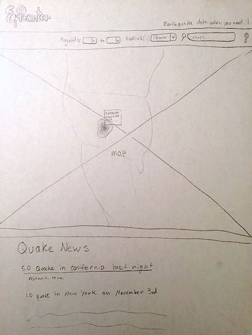

Epicenter
An earthquake location and intensity tracker for people interested in the rumblings of the earth.
Utilizing:
Google Maps
USGS Earthquake Data
Prospective Features
- Epicenter and range displayed on map
- Colors denote strength of quake
- Choose the time window
- Search for quakes within a certain radius
- Search for quakes within a certain range of magnitudes
- Show effect area
- Show stats about the quake (tsunami, alert level, etc...)
- Visually represent in a way that will make sense to anyone
- List of quakes for a certain area
- Links to news on past quakes that caused damage
Expected Features
- Epicenter and range displayed on map
- Colors denote strength of quake
- Search for quakes within a certain radius
- Search for quakes within a certain range of magnitudes
- Show effect area
- Visually represent in a way that will make sense to anyone
Mockup
